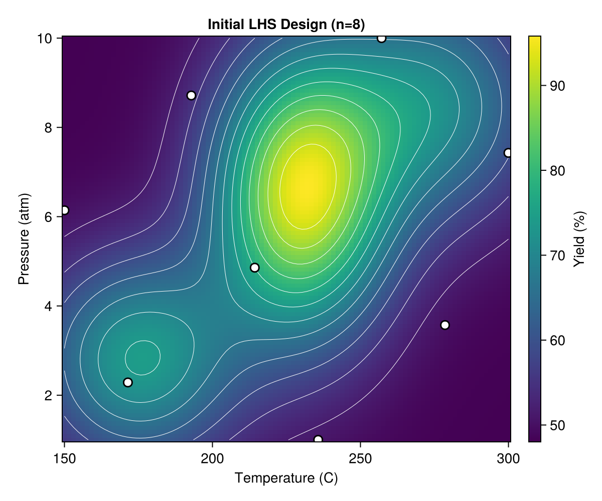
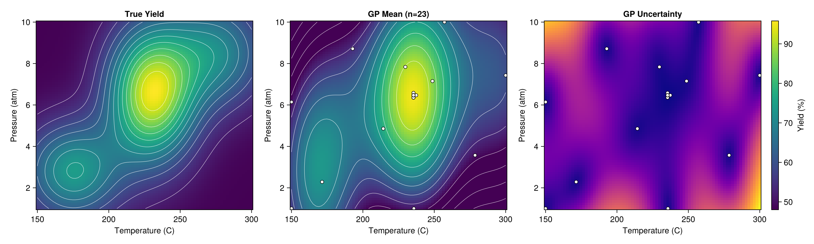
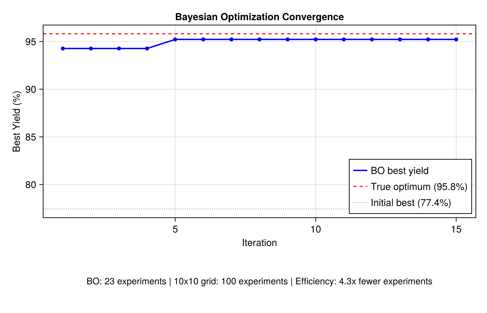

Chemical Yield Optimization
This example demonstrates modern Response Surface Methodology (RSM) using a GP surrogate with Expected Improvement-based Bayesian Optimization, inspired by the pioneering work of George Box and K.B. Wilson (1951) on optimizing chemical manufacturing processes.
The Manufacturing Problem
In chemical manufacturing, each experiment is expensive — requiring raw materials, reactor time, and lab analysis. The goal is to find operating conditions (temperature, pressure, catalyst loading, etc.) that maximize product yield using as few experiments as possible.
Classical RSM fits low-order polynomials to designed experiments. Here we replace the polynomial with a separable GP surrogate that:
- Captures nonlinear response surfaces without pre-specifying a model form
- Provides uncertainty estimates that guide where to experiment next
- Learns per-dimension sensitivity via ARD (Automatic Relevance Determination)
Setup
using laGP
using CairoMakie
using Random
using Distributions: Normal, cdf, pdf
using LatinHypercubeSampling
Random.seed!(42)Yield Function
We define a synthetic 2D yield surface over Temperature (150-300 °C) and Pressure (1-10 atm) with three optima — a challenging multi-modal landscape:
function chemical_yield(T, P)
t = (T - 150) / 150 # normalize to [0, 1]
p = (P - 1) / 9
# Global optimum: ~96% at T≈232, P≈6.5
global_peak = 45.0 * exp(-25.0 * (t - 0.533)^2 - 8.0 * (p - 0.611)^2)
# Local optimum 1: ~74% at T≈175, P≈2.8
local1 = 26.0 * exp(-20.0 * (t - 0.167)^2 - 15.0 * (p - 0.20)^2)
# Local optimum 2: ~73% at T≈275, P≈8.5
local2 = 22.0 * exp(-18.0 * (t - 0.833)^2 - 12.0 * (p - 0.833)^2)
return 48.0 + global_peak + local1 + local2
endThe global peak is narrow and anisotropic (temperature ~3× more sensitive than pressure), making it a good test for separable GPs.
True Surface

The 3D view (left) reveals the multi-modal landscape. The contour plot (right) shows the global optimum near T≈232 °C, P≈6.5 atm, flanked by two weaker local optima.
Expected Improvement
We implement the Expected Improvement (EI) acquisition function for maximization:
\[\text{EI}(x) = (\mu(x) - f_{\text{best}}) \, \Phi(z) + \sigma(x) \, \phi(z), \quad z = \frac{\mu(x) - f_{\text{best}}}{\sigma(x)}\]
where $\mu(x)$ and $\sigma(x)$ are the GP posterior mean and standard deviation, $f_{\text{best}}$ is the best observation so far, and $\Phi$, $\phi$ are the standard normal CDF and PDF.
function expected_improvement(mu, sigma, f_best)
ei = zeros(length(mu))
for i in eachindex(mu)
if sigma[i] > 1e-10
z = (mu[i] - f_best) / sigma[i]
ei[i] = (mu[i] - f_best) * cdf(Normal(), z) + sigma[i] * pdf(Normal(), z)
end
end
return ei
endEI naturally balances exploitation (high predicted yield) with exploration (high uncertainty), preferring points that have the greatest expected improvement over the current best.
Initial Design
We start with a Latin Hypercube Sample of 8 points — a space-filling design that ensures good coverage of the input space:
n_init = 8
plan, _ = LHCoptim(n_init, 2, 100)
X_coded = scaleLHC(plan, [(0.0, 1.0), (0.0, 1.0)])
Y_obs = [yield_coded(X_coded[i, 1], X_coded[i, 2]) for i in 1:n_init]
The 8 initial points (white circles) are spread across the input space. The best initial observation is 77.4% — near a local optimum, far from the global peak of ~96%.
Initial GP Surrogate
We fit a separable GP to the initial data using new_gp_sep and optimize hyperparameters via jmle_gp_sep!:
d_info = darg_sep(X_coded)
g_info = garg(Y_obs)
d_init = [d_info.ranges[1].start, d_info.ranges[2].start]
gp = new_gp_sep(X_coded, Y_obs, d_init, g_info.start)
drange = (d_info.ranges[1].min, d_info.ranges[1].max)
grange = (g_info.min, g_info.max)
jmle_gp_sep!(gp; drange=drange, grange=grange, verb=0)
With only 8 observations, the GP captures the general trend but has high uncertainty (right panel) in unexplored regions.
Bayesian Optimization
At each iteration, we:
- Rebuild the separable GP on all data collected so far
- Predict on an 80×80 grid covering the input space
- Compute EI at each grid point
- Evaluate the yield at the EI-maximizing location
for iter in 1:15
# Rebuild GP
gp_i = new_gp_sep(X_bo, Y_bo, d_init_i, g_info_i.start)
jmle_gp_sep!(gp_i; drange=drange_i, grange=grange_i, verb=0)
# Predict and compute EI
pred_i = pred_gp_sep(gp_i, XX; lite=true)
ei_i = expected_improvement(pred_i.mean, sqrt.(pred_i.s2), maximum(Y_bo))
# Next experiment at EI maximum
x_next = XX[argmax(ei_i), :]
y_next = yield_coded(x_next[1], x_next[2])
X_bo = vcat(X_bo, x_next')
Y_bo = vcat(Y_bo, y_next)
endIteration 1: Discovery
The first BO iteration jumps from 77.4% to 94.3% — EI directs the search straight to the global optimum region.

Left: GP mean prediction with the next evaluation point (red star). Right: EI heatmap showing where the algorithm expects the greatest improvement.
Iteration 5: Refinement
By iteration 5, the GP has refined its estimate of the global peak. Best yield: 95.2%.

Iteration 10: Exploitation
With 18 total observations, the GP accurately models the global optimum region. EI is now concentrated on fine-tuning.

Iteration 15: Convergence
Final best yield: 95.2%, within 0.6% of the true optimum (95.8%).

Final Surrogate
After all 23 experiments (8 initial + 15 BO), the GP accurately reconstructs the entire yield surface:

The three panels show: true yield surface (left), GP mean prediction with all observation locations (center), and GP uncertainty (right). Uncertainty is lowest near the global optimum where observations are concentrated.
Convergence

BO finds near-optimal conditions in just 23 experiments — compared to 100 for a naive 10×10 grid search. That's a ~4× reduction in experimental cost.
ARD Lengthscale Interpretation
The separable GP's per-dimension lengthscales reveal process sensitivity:
Final separable GP lengthscales:
d[1] (Temperature) = 0.079
d[2] (Pressure) = 0.657
Ratio d[2]/d[1] = 8.3A smaller lengthscale means the function varies more rapidly in that direction. Temperature's lengthscale is ~8× smaller than Pressure's, confirming that yield is much more sensitive to temperature changes — a valuable insight for process control.
Running the Example
julia --project=examples examples/chemical_yield_rsm.jlThis generates 9 PNG files in the examples/ directory.
Extensions
- Noisy observations: Increase the nugget or optimize it via
jmle_gp_sep!()to handle measurement noise - Higher dimensions: Add catalyst type, flow rate, etc. — ARD automatically identifies which matter
- Batch BO: Select multiple points per iteration for parallel experiments
- Constraints: Incorporate safety constraints (e.g., max pressure, min yield threshold)
See Also
- Bayesian Optimization — 1D BO example with UCB acquisition
- Multivariate Inputs (ARD) — Isotropic vs separable GP comparison
- Box, G.E.P. and Wilson, K.B. (1951). "On the Experimental Attainment of Optimum Conditions." Journal of the Royal Statistical Society B, 13(1), 1–45.